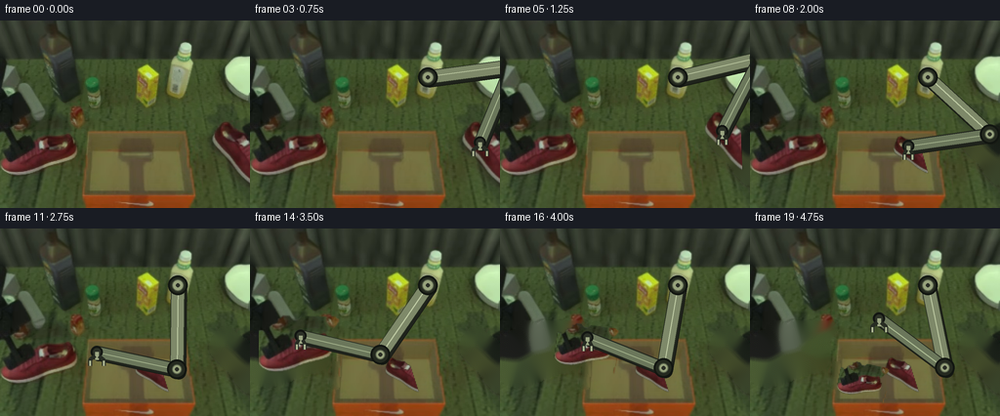
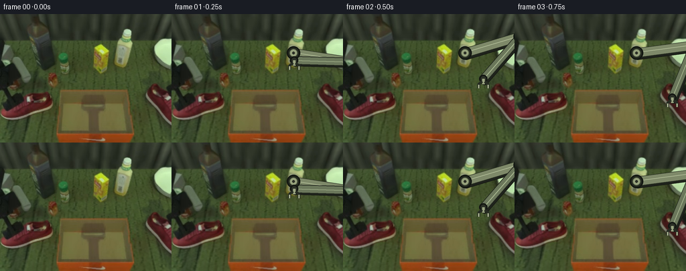

CODING AGENTS AS PIXEL WORLD MODELS
traex/GPT-5.6-Sol · common50_0048
点击播放 · 原生 RGB 像素
逐轮保存的候选
回放视频、检查图与代码变化。
每份候选均可单独播放。实际图片检查记录在下方工具轨迹中。
候选 01播放与检查图
点击播放 · 原生 RGB 像素


展开代码变化
--- 上一保存版本
+++ 本次保存版本
@@ -0,0 +1,236 @@
+"""Deterministic pixel animation for the PixelWorld arrange-shoes task.
+
+The photographed first frame supplies all scene/object appearance. The two red
+shoe sprites are segmented from it, and their newly revealed footprints are
+filled numerically from the surrounding work surface. A rigid two-link robot
+is rendered with constant link lengths and analytic inverse kinematics.
+"""
+from pathlib import Path
+import math
+import cv2
+import numpy as np
+from PIL import Image, ImageDraw
+import artifact_io
+
+ROOT = Path(__file__).resolve().parent
+W, H = 256, 192
+
+
+def smooth(t):
+ t = float(np.clip(t, 0.0, 1.0))
+ return t*t*(3.0-2.0*t)
+
+
+def mix(a, b, t):
+ t = smooth(t)
+ return (a[0]*(1-t)+b[0]*t, a[1]*(1-t)+b[1]*t)
+
+
+def quad(a, control, b, t):
+ t = smooth(t); u = 1-t
+ return (u*u*a[0]+2*u*t*control[0]+t*t*b[0],
+ u*u*a[1]+2*u*t*control[1]+t*t*b[1])
+
+
+def shoe_mask(rgb, rect):
+ """GrabCut constrained by red pixels; retain connected red-bearing blobs."""
+ x, y, w, h = rect
+ bgr = cv2.cvtColor(rgb, cv2.COLOR_RGB2BGR)
+ gc = np.full((H, W), cv2.GC_BGD, np.uint8)
+ gc[y:min(H,y+h), x:min(W,x+w)] = cv2.GC_PR_FGD
+ r, g, b = [rgb[...,i].astype(np.int16) for i in range(3)]
+ red = (r > 55) & (r > 1.32*g) & (r > 1.23*b)
+ region = np.zeros((H,W), bool)
+ region[y:min(H,y+h), x:min(W,x+w)] = True
+ gc[red & region] = cv2.GC_FGD
+ cv2.setRNGSeed(37)
+ bgd = np.zeros((1,65), np.float64)
+ fgd = np.zeros((1,65), np.float64)
+ cv2.grabCut(bgr, gc, None, bgd, fgd, 6, cv2.GC_INIT_WITH_MASK)
+ raw = ((gc == cv2.GC_FGD) | (gc == cv2.GC_PR_FGD)).astype(np.uint8)
+ n, labels, stats, _ = cv2.connectedComponentsWithStats(raw)
+ out = np.zeros_like(raw)
+ for k in range(1, n):
+ component = labels == k
+ if np.any(component & red) and stats[k, cv2.CC_STAT_AREA] >= 8:
+ out[component] = 255
+ # Close tiny lace/sole holes while retaining a naturally antialiased edge.
+ out = cv2.morphologyEx(out, cv2.MORPH_CLOSE,
+ cv2.getStructuringElement(cv2.MORPH_ELLIPSE,(3,3)))
+ return out
+
+
+def make_sprite(rgb, mask):
+ ys, xs = np.where(mask > 0)
+ x0, x1 = max(0,xs.min()-2), min(W,xs.max()+3)
+ y0, y1 = max(0,ys.min()-2), min(H,ys.max()+3)
+ col = rgb[y0:y1,x0:x1].copy()
+ a = mask[y0:y1,x0:x1]
+ # A one-pixel optical feather eliminates cutout stair-stepping.
+ a = cv2.GaussianBlur(a, (3,3), 0.55)
+ return col, a, ((x0+x1-1)/2.0, (y0+y1-1)/2.0)
+
+
+def remove_objects(rgb, masks):
+ m = np.zeros((H,W), np.uint8)
+ for mask in masks:
+ m = np.maximum(m, mask)
+ m = cv2.dilate(m, cv2.getStructuringElement(cv2.MORPH_ELLIPSE,(9,9)))
+ # Telea gives a stable continuation of the mottled olive work mat.
+ bgr = cv2.cvtColor(rgb, cv2.COLOR_RGB2BGR)
+ filled = cv2.inpaint(bgr, m, 7, cv2.INPAINT_TELEA)
+ return cv2.cvtColor(filled, cv2.COLOR_BGR2RGB)
+
+
+def place_sprite(canvas, sprite, alpha, src_center, center, scale, angle):
+ """Affine-copy source pixels directly into full-resolution scene."""
+ sh, sw = alpha.shape
+ # local image center can differ by half a pixel from bbox scene center
+ lc = ((sw-1)/2.0, (sh-1)/2.0)
+ M = cv2.getRotationMatrix2D(lc, angle, scale)
+ M[0,2] += center[0]-lc[0]
+ M[1,2] += center[1]-lc[1]
+ warped_c = cv2.warpAffine(sprite, M, (W,H), flags=cv2.INTER_CUBIC,
+ borderMode=cv2.BORDER_CONSTANT, borderValue=(0,0,0))
+ warped_a = cv2.warpAffine(alpha, M, (W,H), flags=cv2.INTER_LINEAR,
+ borderMode=cv2.BORDER_CONSTANT, borderValue=0)
+ af = (warped_a.astype(np.float32)/255.0)[...,None]
+ return np.clip(canvas.astype(np.float32)*(1-af)+warped_c.astype(np.float32)*af,
+ 0,255).astype(np.uint8)
+
+
+def ik_elbow(base, tip, l1=86.0, l2=84.0):
+ bx,by=base; tx,ty=tip
+ dx,dy=tx-bx,ty-by; d=max(2.1,min(math.hypot(dx,dy),l1+l2-0.1))
+ ux,uy=dx/d,dy/d
+ along=(l1*l1-l2*l2+d*d)/(2*d)
+ high=math.sqrt(max(0.0,l1*l1-along*along))
+ # clockwise-bent solution keeps the elbow away from the object/bin.
+ return (bx+along*ux+high*uy, by+along*uy-high*ux)
+
+
+def capsule(draw, a, b, width, edge, fill, highlight=None):
+ draw.line((a,b), fill=edge, width=width+5, joint='curve')
+ draw.ellipse((a[0]-(width+5)/2,a[1]-(width+5)/2,
+ a[0]+(width+5)/2,a[1]+(width+5)/2),fill=edge)
+ draw.ellipse((b[0]-(width+5)/2,b[1]-(width+5)/2,
+ b[0]+(width+5)/2,b[1]+(width+5)/2),fill=edge)
+ draw.line((a,b), fill=fill, width=width, joint='curve')
+ draw.ellipse((a[0]-width/2,a[1]-width/2,a[0]+width/2,a[1]+width/2),fill=fill)
+ draw.ellipse((b[0]-width/2,b[1]-width/2,b[0]+width/2,b[1]+width/2),fill=fill)
+ if highlight:
+ # narrow highlight displaced toward the upper-left
+ av=np.array(a,float); bv=np.array(b,float); v=bv-av
+ n=np.array([v[1],-v[0]])/(np.linalg.norm(v)+1e-6)*2.0
+ aa=tuple(av+n); bb=tuple(bv+n)
+ draw.line((aa,bb), fill=highlight, width=3)
+
+
+def draw_robot(rgb, tip, grip=0.0):
+ """Overlay a rigid, non-deforming industrial arm at 3x supersampling."""
+ S=3
+ im=Image.fromarray(rgb).resize((W*S,H*S),Image.Resampling.NEAREST)
+ d=ImageDraw.Draw(im)
+ base=(182.0,58.0)
+ elbow=ik_elbow(base,tip)
+ def p(q): return (int(round(q[0]*S)),int(round(q[1]*S)))
+ B,E,T=p(base),p(elbow),p(tip)
+ # Contact shadow under mechanism.
+ capsule(d,p((base[0]+2,base[1]+3)),p((elbow[0]+2,elbow[1]+3)),13*S,
+ (24,27,20),(31,35,28))
+ capsule(d,p((elbow[0]+2,elbow[1]+3)),p((tip[0]+2,tip[1]+3)),11*S,
+ (24,27,20),(31,35,28))
+ # Rigid olive/silver links match the photographed mechanism.
+ capsule(d,B,E,13*S,(37,43,31),(126,137,105),(190,202,163))
+ capsule(d,E,T,11*S,(34,39,30),(107,119,91),(170,185,145))
+ # Fixed mechanical joints, concentric and undeformed.
+ for q,ro,ri in [(B,10*S,6*S),(E,10*S,5*S)]:
+ d.ellipse((q[0]-ro,q[1]-ro,q[0]+ro,q[1]+ro),fill=(36,41,31),outline=(18,22,17),width=2*S)
+ d.ellipse((q[0]-ri,q[1]-ri,q[0]+ri,q[1]+ri),fill=(151,162,124),outline=(82,91,69),width=S)
+ d.ellipse((q[0]-2*S,q[1]-2*S,q[0]+2*S,q[1]+2*S),fill=(43,47,38))
+ # Wrist and parallel gripper fingers. grip=1 closes around a shoe.
+ r=6*S
+ d.ellipse((T[0]-r,T[1]-r,T[0]+r,T[1]+r),fill=(44,49,39),outline=(18,21,17),width=2*S)
+ opening=(7.0-3.0*grip)*S
+ stem=8*S
+ d.line((T[0],T[1],T[0],T[1]+stem),fill=(156,166,130),width=4*S)
+ for sg in (-1,1):
+ xx=T[0]+sg*opening
+ d.line((T[0]+sg*2*S,T[1]+4*S,xx,T[1]+8*S,xx,T[1]+14*S),
+ fill=(39,44,35),width=4*S,joint='curve')
+ d.line((xx,T[1]+9*S,xx,T[1]+14*S),fill=(174,183,147),width=2*S)
+ return np.asarray(im.resize((W,H),Image.Resampling.LANCZOS),dtype=np.uint8)
+
+
+def main():
+ first=np.asarray(Image.open(ROOT/'first_frame.png').convert('RGB'),dtype=np.uint8)
+ left_m=shoe_mask(first,(0,98,90,66))
+ right_m=shoe_mask(first,(211,95,45,75))
+ left_s,left_a,left_c=make_sprite(first,left_m)
+ right_s,right_a,right_c=make_sprite(first,right_m)
+ bg_right=remove_objects(first,[right_m])
+ bg_both=remove_objects(first,[left_m,right_m])
+
+ frames=[first.copy()]
+ # Final side-by-side positions are wholly within the box interior.
+ rtgt=(153.0,151.0); ltgt=(116.0,156.0)
+ rsrc=right_c; lsrc=left_c
+ for f in range(1,20):
+ # Scene plate and object trajectories.
+ if f <= 3:
+ scene=first.copy()
+ rc=rsrc; rscale=1.0; rang=0.0
+ elif f <= 9:
+ scene=bg_right.copy()
+ t=(f-4)/5.0
+ rc=quad((rsrc[0],rsrc[1]-3),(197,85),rtgt,t)
+ rscale=1.0+(0.68-1.0)*smooth(t); rang=18.0*smooth(t)
+ scene=place_sprite(scene,right_s,right_a,right_c,rc,rscale,rang)
+ else:
+ scene=bg_right.copy() if f <= 12 else bg_both.copy()
+ rc=rtgt; rscale=.68; rang=18.0
+ scene=place_sprite(scene,right_s,right_a,right_c,rc,rscale,rang)
+
+ if f <= 12:
+ # left shoe remains exactly on its photographed source footprint
+ if f >= 4:
+ # bg_right still contains it already; no second compositing
+ pass
+ else:
+ t=(f-13)/5.0
+ lc=quad((lsrc[0],lsrc[1]-3),(77,88),ltgt,t)
+ lscale=1.0+(0.57-1.0)*smooth(t); lang=-12.0*smooth(t)
+ scene=place_sprite(scene,left_s,left_a,left_c,lc,lscale,lang)
+ if f >= 18:
+ # settle precisely into a neat final arrangement
+ scene=bg_both.copy()
+ scene=place_sprite(scene,right_s,right_a,right_c,rtgt,.68,18.0)
+ scene=place_sprite(scene,left_s,left_a,left_c,ltgt,.57,-12.0)
+
+ # Single continuous end-effector path for the same robot.
+ if f == 1:
+ tip=(183.0,69.0); hold=0.0
+ elif f <= 3:
+ tip=mix((183,69),(rsrc[0],rsrc[1]-10),(f-1)/2); hold=0.0
+ elif f <= 9:
+ tip=(rc[0],rc[1]-10); hold=1.0
+ elif f == 10:
+ tip=(rtgt[0],rtgt[1]-18); hold=0.0
+ elif f <= 12:
+ tip=mix((rtgt[0],rtgt[1]-18),(lsrc[0],lsrc[1]-10),(f-10)/2); hold=0.0
+ elif f <= 17:
+ tip=(lc[0],lc[1]-10); hold=1.0
+ elif f == 18:
+ tip=(ltgt[0],ltgt[1]-20); hold=0.0
+ else:
+ tip=(132.0,92.0); hold=0.0
+ scene=draw_robot(scene,tip,hold)
+ frames.append(scene)
+
+ arr=np.stack(frames).astype(np.uint8)
+ # Contract-critical guarantee: no renderer ever touches frame zero.
+ arr[0]=first
+ artifact_io.save(arr,ROOT)
+
+if __name__=='__main__':
+ main()
可观测工具轨迹
实际执行的命令与返回图片。
命令 1exit 0
/bin/bash -lc "cat GENERATION_RULES.md && printf '\\n---PROMPT---\\n' && cat prompt.txt"
命令 2exit 0
/bin/bash -lc "find . -maxdepth 2 -type f -printf '%p %s bytes\\n' | sort"
命令 3exit 0
/bin/bash -lc "cat task_spec.json && sed -n '1,240p' artifact_io.py"
命令 4exit 0
/bin/bash -lc "python3 - <<'PY'
from PIL import Image
import numpy as np
im=np.array(Image.open('first_frame.png').convert('RGB'))
print(im.shape, im.dtype, im.min(), im.max())
# quantized top colors
q=(im//16)*16
u,c=np.unique(q.reshape(-1,3),axis=0,return_counts=True)
for i in np.argsort(c)[-30:][::-1]: print(tuple(u[i]),c[i])
# region average 8x6
for y in range(0,192,32):
print('row',y, [tuple(im[y:y+32,x:x+32].mean((0,1)).astype(int)) for x in range(0,256,32)])
PY"命令 5exit 2
/bin/bash -lc "cat > /tmp/analyze.py <<'PY'
from PIL import Image
import numpy as np
from colorsys import rgb_to_hsv
from scipy import ndimage
im=np.array(Image.open('first_frame.png').convert('RGB'))
r,g,b=im.transpose(2,0,1).astype(int)
mx=np.max(im,2); mn=np.min(im,2); d=mx-mn
# masks candidates
masks={
'red':(r>g*1.35)&(r>b*1.25)&(r>55),
'orange':(r>g*1.45)&(g>b*1.15)&(r>80),
'white':(mn>120)&(d<45),
'gray':(mn>75)&(d<30),
'blue':(b>r*1.2)&(b>g*1.1)&(b>60),
'robotlight':(r>75)&(g>75)&(b>65)&(d<40),
'dark':mx<40,
}
for name,m in masks.items():
lab,n=ndimage.label(m)
print('\\n',name,m.sum(),'components',n)
objs=[]
for j in range(1,n+1):
ys,xs=np.where(lab==j); s=len(xs)
if s>=5: objs.append((s,(xs.min(),ys.min(),xs.max(),ys.max()),(round(xs.mean(),1),round(ys.mean(),1))))
print(sorted(objs,reverse=True)[:20])
# category ASCII every 4x4 based prevalence
cats=np.full((192,256),'?')
cats[:]='.'
cats[masks['dark']]='K'; cats[masks['gray']]='W'; cats[masks['robotlight']]='G'; cats[masks['red']]='R'; cats[masks['orange']]='O'; cats[masks['blue']]='B'
print('\\nASCII category blocks 4 px majority / sample center')
for y in range(0,192,4):
s=''
for x in range(0,256,4):
a=cats[y:y+4,x:x+4]
u,c=np.unique(a,return_counts=True); ch=u[c.argmax()]
s+=ch
print(f'{y:03}',s)
PY
python3 /tmp/analyze.py"命令 6exit 0
/bin/bash -lc "cat > .tmp/analyze.py <<'PY'
from PIL import Image
import numpy as np
from scipy import ndimage
im=np.array(Image.open('first_frame.png').convert('RGB'))
r,g,b=im.transpose(2,0,1).astype(int); mx=np.max(im,2); mn=np.min(im,2); d=mx-mn
masks={'red':(r>g*1.35)&(r>b*1.25)&(r>55),'orange':(r>g*1.45)&(g>b*1.15)&(r>80),'white':(mn>120)&(d<45),'gray':(mn>75)&(d<30),'blue':(b>r*1.2)&(b>g*1.1)&(b>60),'robotlight':(r>75)&(g>75)&(b>65)&(d<40),'dark':mx<40}
for name,m in masks.items():
lab,n=ndimage.label(m); print('\\n',name,m.sum(),'components',n); objs=[]
for j in range(1,n+1):
ys,xs=np.where(lab==j); s=len(xs)
if s>=5: objs.append((s,(xs.min(),ys.min(),xs.max(),ys.max()),(round(xs.mean(),1),round(ys.mean(),1))))
print(sorted(objs,reverse=True)[:20])
cats=np.full((192,256),'.'); cats[masks['dark']]='K'; cats[masks['gray']]='W'; cats[masks['robotlight']]='G'; cats[masks['red']]='R'; cats[masks['orange']]='O'; cats[masks['blue']]='B'
print('\\nASCII blocks 4px')
for y in range(0,192,4):
s=''
for x in range(0,256,4):
a=cats[y:y+4,x:x+4]; u,c=np.unique(a,return_counts=True); s+=u[c.argmax()]
print(f'{y:03}',s)
PY
python3 .tmp/analyze.py"命令 7exit 0
/bin/bash -lc "cat > .tmp/map.py <<'PY'
from PIL import Image
import numpy as np
from sklearn.cluster import KMeans
from scipy import ndimage
im=np.array(Image.open('first_frame.png').convert('RGB'))
# k means colors sample/full
km=KMeans(n_clusters=20,random_state=2,n_init=5).fit(im.reshape(-1,3)[::3])
cen=km.cluster_centers_.astype(int); order=np.argsort(cen.mean(1)); print(list(enumerate(map(tuple,cen))))
lab=km.predict(im.reshape(-1,3)).reshape(192,256)
chars='0123456789ABCDEFGHIJ'
for scale in [4]:
print('map')
for y in range(0,192,scale):
s=''
for x in range(0,256,scale):
a=lab[y:y+scale,x:x+scale]; u,c=np.unique(a,return_counts=True); s+=chars[u[c.argmax()]]
print(f'{y:03}',s)
PY
python3 .tmp/map.py"命令 8exit 0
/bin/bash -lc "python3 - <<'PY'
exec(open('.tmp/map.py').read().split(\"for scale\")[0])
chars='0123456789ABCDEFGHIJ'
for y in [108,112,116,120,124,128,132,136,140,144,148,152,156,160,164,168,172,176,180,184,188]:
row=lab[y]
runs=[]; st=0; last=row[0]
for x in range(1,256):
if row[x]"'!=last:
if x-st>=4:runs.append((st,x-1,chars[last]))
st=x;last=row[x]
if 256-st>=4:runs.append((st,255,chars[last]))
print(y,runs)
PY'命令 9exit 0
/bin/bash -lc "python3 - <<'PY'
from PIL import Image
import numpy as np
im=np.asarray(Image.open('first_frame.png').convert('L'))
chars='@%#*+=-:. '
# dimensions 96x48 taking account char aspect
for y in range(0,192,4):
print(''.join(chars[int(im[y:y+4,x:x+3].mean())*len(chars)//256] for x in range(0,256,3)))
PY"命令 10exit 0
/bin/bash -lc "which chafa viu jp2 || true; python3 - <<'PY'
from PIL import Image
im=Image.open('first_frame.png')
for name,box in [('all',(0,0,256,192)),('left',(0,35,100,170)),('center',(70,90,210,192)),('right',(160,0,256,175))]:
im.crop(box).resize(((box[2]-box[0])*4,(box[3]-box[1])*4)).save('.tmp/'+name+'.png')
PY"命令 11exit 0
/bin/bash -lc "python3 - <<'PY'
from PIL import Image
import numpy as np
im=np.array(Image.open('first_frame.png'))
for name,box in {'toparm':(170,15,200,80),'leftarm':(0,35,55,110),'righttop':(225,35,256,90),'rightshoe':(210,95,256,170),'leftshoe':(0,95,88,165),'boxinner':(88,113,193,178),'boxfront':(85,178,200,192)}.items():
x1,y1,x2,y2=box;a=im[y1:y2,x1:x2]
print(name,'mean',a.mean((0,1)).astype(int),'med',np.median(a.reshape(-1,3),0).astype(int),'range',a.min((0,1)),a.max((0,1)))
PY"命令 12exit 0
/bin/bash -lc "python3 - <<'PY'
try:
import cv2; print('cv2',cv2.__version__)
except Exception as e: print(e)
PY"命令 13exit 0
/bin/bash -lc "cat > .tmp/seg.py <<'PY'
import cv2, numpy as np
from PIL import Image
im=np.array(Image.open('first_frame.png').convert('RGB')); bgr=cv2.cvtColor(im,cv2.COLOR_RGB2BGR)
for name,rect in [('left',(0,98,90,66)),('right',(211,95,45,75))]:
x,y,w,h=rect
mask=np.full(im.shape[:2],cv2.GC_BGD,np.uint8)
mask[max(0,y):min(192,y+h),max(0,x):min(256,x+w)]=cv2.GC_PR_FGD
r,g,b=im.transpose(2,0,1).astype(int)
red=(r>g*1.32)&(r>b*1.23)&(r>55)
# only sure fg nearby
reg=np.zeros_like(red);reg[max(0,y):min(192,y+h),max(0,x):min(256,x+w)]=1
mask[red®.astype(bool)]=cv2.GC_FGD
# clear likely box overlap at x >80 / <210
bgd=np.zeros((1,65),np.float64);fgd=np.zeros((1,65),np.float64)
cv2.grabCut(bgr,mask,None,bgd,fgd,6,cv2.GC_INIT_WITH_MASK)
m=((mask==1)|(mask==3)).astype(np.uint8)
n,lab,stats,cents=cv2.connectedComponentsWithStats(m)
keep=np.zeros_like(m)
for i in range(1,n):
if np.any(red & (lab==i)): keep[lab==i]=1
print(name,keep.sum(),cv2.boundingRect(keep),[(stats[i,4],stats[i,:4].tolist()) for i in range(1,n) if np.any(red&(lab==i))])
out=im.copy();out[keep==0]=out[keep==0]//5
Image.fromarray(out).save('.tmp/seg_'+name+'.png')
PY
python3 .tmp/seg.py"命令 14exit 0
/bin/bash -lc "cat > generate.py <<'PY'
\"\"\"Deterministic pixel animation for the PixelWorld arrange-shoes task.
The photographed first frame supplies all scene/object appearance. The two red
shoe sprites are segmented from it, and their newly revealed footprints are
filled numerically from the surrounding work surface. A rigid two-link robot
is rendered with constant link lengths and analytic inverse kinematics.
\"\"\"
from pathlib import Path
import math
import cv2
import numpy as np
from PIL import Image, ImageDraw
import artifact_io
ROOT = Path(__file__).resolve().parent
W, H = 256, 192
def smooth(t):
t = float(np.clip(t, 0.0, 1.0))
return t*t*(3.0-2.0*t)
def mix(a, b, t):
t = smooth(t)
return (a[0]*(1-t)+b[0]*t, a[1]*(1-t)+b[1]*t)
def quad(a, control, b, t):
t = smooth(t); u = 1-t
return (u*u*a[0]+2*u*t*control[0]+t*t*b[0],
u*u*a[1]+2*u*t*control[1]+t*t*b[1])
def shoe_mask(rgb, rect):
\"\"\"GrabCut constrained by red pixels; retain connected red-bearing blobs.\"\"\"
x, y, w, h = rect
bgr = cv2.cvtColor(rgb, cv2.COLOR_RGB2BGR)
gc = np.full((H, W), cv2.GC_BGD, np.uint8)
gc[y:min(H,y+h), x:min(W,x+w)] = cv2.GC_PR_FGD
r, g, b = [rgb[...,i].astype(np.int16) for i in range(3)]
red = (r > 55) & (r > 1.32*g) & (r > 1.23*b)
region = np.zeros((H,W), bool)
region[y:min(H,y+h), x:min(W,x+w)] = True
gc[red & region] = cv2.GC_FGD
cv2.setRNGSeed(37)
bgd = np.zeros((1,65), np.float64)
fgd = np.zeros((1,65), np.float64)
cv2.grabCut(bgr, gc, None, bgd, fgd, 6, cv2.GC_INIT_WITH_MASK)
raw = ((gc == cv2.GC_FGD) | (gc == cv2.GC_PR_FGD)).astype(np.uint8)
n, labels, stats, _ = cv2.connectedComponentsWithStats(raw)
out = np.zeros_like(raw)
for k in range(1, n):
component = labels == k
if np.any(component & red) and stats[k, cv2.CC_STAT_AREA] >= 8:
out[component] = 255
# Close tiny lace/sole holes while retaining a naturally antialiased edge.
out = cv2.morphologyEx(out, cv2.MORPH_CLOSE,
cv2.getStructuringElement(cv2.MORPH_ELLIPSE,(3,3)))
return out
def make_sprite(rgb, mask):
ys, xs = np.where(mask > 0)
x0, x1 = max(0,xs.min()-2), min(W,xs.max()+3)
y0, y1 = max(0,ys.min()-2), min(H,ys.max()+3)
col = rgb[y0:y1,x0:x1].copy()
a = mask[y0:y1,x0:x1]
# A one-pixel optical feather eliminates cutout stair-stepping.
a = cv2.GaussianBlur(a, (3,3), 0.55)
return col, a, ((x0+x1-1)/2.0, (y0+y1-1)/2.0)
def remove_objects(rgb, masks):
m = np.zeros((H,W), np.uint8)
for mask in masks:
m = np.maximum(m, mask)
m = cv2.dilate(m, cv2.getStructuringElement(cv2.MORPH_ELLIPSE,(9,9)))
# Telea gives a stable continuation of the mottled olive work mat.
bgr = cv2.cvtColor(rgb, cv2.COLOR_RGB2BGR)
filled = cv2.inpaint(bgr, m, 7, cv2.INPAINT_TELEA)
return cv2.cvtColor(filled, cv2.COLOR_BGR2RGB)
def place_sprite(canvas, sprite, alpha, src_center, center, scale, angle):
\"\"\"Affine-copy source pixels directly into full-resolution scene.\"\"\"
sh, sw = alpha.shape
# local image center can differ by half a pixel from bbox scene center
lc = ((sw-1)/2.0, (sh-1)/2.0)
M = cv2.getRotationMatrix2D(lc, angle, scale)
M[0,2] += center[0]-lc[0]
M[1,2] += center[1]-lc[1]
warped_c = cv2.warpAffine(sprite, M, (W,H), flags=cv2.INTER_CUBIC,
borderMode=cv2.BORDER_CONSTANT, borderValue=(0,0,0))
warped_a = cv2.warpAffine(alpha, M, (W,H), flags=cv2.INTER_LINEAR,
borderMode=cv2.BORDER_CONSTANT, borderValue=0)
af = (warped_a.astype(np.float32)/255.0)[...,None]
return np.clip(canvas.astype(np.float32)*(1-af)+warped_c.astype(np.float32)*af,
0,255).astype(np.uint8)
def ik_elbow(base, tip, l1=86.0, l2=84.0):
bx,by=base; tx,ty=tip
dx,dy=tx-bx,ty-by; d=max(2.1,min(math.hypot(dx,dy),l1+l2-0.1))
ux,uy=dx/d,dy/d
along=(l1*l1-l2*l2+d*d)/(2*d)
high=math.sqrt(max(0.0,l1*l1-along*along))
# clockwise-bent solution keeps the elbow away from the object/bin.
return (bx+along*ux+high*uy, by+along*uy-high*ux)
def capsule(draw, a, b, width, edge, fill, highlight=None):
draw.line((a,b), fill=edge, width=width+5, joint='curve')
draw.ellipse((a[0]-(width+5)/2,a[1]-(width+5)/2,
a[0]+(width+5)/2,a[1]+(width+5)/2),fill=edge)
draw.ellipse((b[0]-(width+5)/2,b[1]-(width+5)/2,
b[0]+(width+5)/2,b[1]+(width+5)/2),fill=edge)
draw.line((a,b), fill=fill, width=width, joint='curve')
draw.ellipse((a[0]-width/2,a[1]-width/2,a[0]+width/2,a[1]+width/2),fill=fill)
draw.ellipse((b[0]-width/2,b[1]-width/2,b[0]+width/2,b[1]+width/2),fill=fill)
if highlight:
# narrow highlight displaced toward the upper-left
av=np.array(a,float); bv=np.array(b,float); v=bv-av
n=np.array([v[1],-v[0]])/(np.linalg.norm(v)+1e-6)*2.0
aa=tuple(av+n); bb=tuple(bv+n)
draw.line((aa,bb), fill=highlight, width=3)
def draw_robot(rgb, tip, grip=0.0):
\"\"\"Overlay a rigid, non-deforming industrial arm at 3x supersampling.\"\"\"
S=3
im=Image.fromarray(rgb).resize((W*S,H*S),Image.Resampling.NEAREST)
d=ImageDraw.Draw(im)
base=(182.0,58.0)
elbow=ik_elbow(base,tip)
def p(q): return (int(round(q[0]*S)),int(round(q[1]*S)))
B,E,T=p(base),p(elbow),p(tip)
# Contact shadow under mechanism.
capsule(d,p((base[0]+2,base[1]+3)),p((elbow[0]+2,elbow[1]+3)),13*S,
(24,27,20),(31,35,28))
capsule(d,p((elbow[0]+2,elbow[1]+3)),p((tip[0]+2,tip[1]+3)),11*S,
(24,27,20),(31,35,28))
# Rigid olive/silver links match the photographed mechanism.
capsule(d,B,E,13*S,(37,43,31),(126,137,105),(190,202,163))
capsule(d,E,T,11*S,(34,39,30),(107,119,91),(170,185,145))
# Fixed mechanical joints, concentric and undeformed.
for q,ro,ri in [(B,10*S,6*S),(E,10*S,5*S)]:
d.ellipse((q[0]-ro,q[1]-ro,q[0]+ro,q[1]+ro),fill=(36,41,31),outline=(18,22,17),width=2*S)
d.ellipse((q[0]-ri,q[1]-ri,q[0]+ri,q[1]+ri),fill=(151,162,124),outline=(82,91,69),width=S)
d.ellipse((q[0]-2*S,q[1]-2*S,q[0]+2*S,q[1]+2*S),fill=(43,47,38))
# Wrist and parallel gripper fingers. grip=1 closes around a shoe.
r=6*S
d.ellipse((T[0]-r,T[1]-r,T[0]+r,T[1]+r),fill=(44,49,39),outline=(18,21,17),width=2*S)
opening=(7.0-3.0*grip)*S
stem=8*S
d.line((T[0],T[1],T[0],T[1]+stem),fill=(156,166,130),width=4*S)
for sg in (-1,1):
xx=T[0]+sg*opening
d.line((T[0]+sg*2*S,T[1]+4*S,xx,T[1]+8*S,xx,T[1]+14*S),
fill=(39,44,35),width=4*S,joint='curve')
d.line((xx,T[1]+9*S,xx,T[1]+14*S),fill=(174,183,147),width=2*S)
return np.asarray(im.resize((W,H),Image.Resampling.LANCZOS),dtype=np.uint8)
def main():
first=np.asarray(Image.open(ROOT/'first_frame.png').convert('RGB'),dtype=np.uint8)
left_m=shoe_mask(first,(0,98,90,66))
right_m=shoe_mask(first,(211,95,45,75))
left_s,left_a,left_c=make_sprite(first,left_m)
right_s,right_a,right_c=make_sprite(first,right_m)
bg_right=remove_objects(first,[right_m])
bg_both=remove_objects(first,[left_m,right_m])
frames=[first.copy()]
# Final side-by-side positions are wholly within the box interior.
rtgt=(153.0,151.0); ltgt=(116.0,156.0)
rsrc=right_c; lsrc=left_c
for f in range(1,20):
# Scene plate and object trajectories.
if f <= 3:
scene=first.copy()
rc=rsrc; rscale=1.0; rang=0.0
elif f <= 9:
scene=bg_right.copy()
t=(f-4)/5.0
rc=quad((rsrc[0],rsrc[1]-3),(197,85),rtgt,t)
rscale=1.0+(0.68-1.0)*smooth(t); rang=18.0*smooth(t)
scene=place_sprite(scene,right_s,right_a,right_c,rc,rscale,rang)
else:
scene=bg_right.copy() if f <= 12 else bg_both.copy()
rc=rtgt; rscale=.68; rang=18.0
scene=place_sprite(scene,right_s,right_a,right_c,rc,rscale,rang)
if f <= 12:
# left shoe remains exactly on its photographed source footprint
if f >= 4:
# bg_right still contains it already; no second compositing
pass
else:
t=(f-13)/5.0
lc=quad((lsrc[0],lsrc[1]-3),(77,88),ltgt,t)
lscale=1.0+(0.57-1.0)*smooth(t); lang=-12.0*smooth(t)
scene=place_sprite(scene,left_s,left_a,left_c,lc,lscale,lang)
if f >= 18:
# settle precisely into a neat final arrangement
scene=bg_both.copy()
scene=place_sprite(scene,right_s,right_a,right_c,rtgt,.68,18.0)
scene=place_sprite(scene,left_s,left_a,left_c,ltgt,.57,-12.0)
# Single continuous end-effector path for the same robot.
if f == 1:
tip=(183.0,69.0); hold=0.0
elif f <= 3:
tip=mix((183,69),(rsrc[0],rsrc[1]-10),(f-1)/2); hold=0.0
elif f <= 9:
tip=(rc[0],rc[1]-10); hold=1.0
elif f == 10:
tip=(rtgt[0],rtgt[1]-18); hold=0.0
elif f <= 12:
tip=mix((rtgt[0],rtgt[1]-18),(lsrc[0],lsrc[1]-10),(f-10)/2); hold=0.0
elif f <= 17:
tip=(lc[0],lc[1]-10); hold=1.0
elif f == 18:
tip=(ltgt[0],ltgt[1]-20); hold=0.0
else:
tip=(132.0,92.0); hold=0.0
scene=draw_robot(scene,tip,hold)
frames.append(scene)
arr=np.stack(frames).astype(np.uint8)
# Contract-critical guarantee: no renderer ever touches frame zero.
arr[0]=first
artifact_io.save(arr,ROOT)
if __name__=='__main__':
main()
PY
python3 generate.py
python3 - <<'PY'
from PIL import Image
import numpy as np
z=np.load('pixels.npz')['pixels']; print(z.shape,z.dtype)
a=np.array(Image.open('first_frame.png')); b=np.array(Image.open('frames/00.png'));print('frame0 exact',np.array_equal(a,b),'changed px',[(i,np.any(np.array(Image.open(f'frames/{i:02}.png'))"'!=a,2).sum()) for i in range(20)])
PY'命令 15exit 0
/bin/bash -lc "python3 - <<'PY'
from PIL import Image
import numpy as np
for fi in [0,1,3,6,9,12,15,18,19]:
a=np.array(Image.open(f'frames/{fi:02}.png'))
# counts red + robot light neutral
r,g,b=a.transpose(2,0,1).astype(int)
red=(r>g*1.35)&(r>b*1.25)&(r>55)
light=(np.minimum.reduce([r,g,b])>100)&(np.maximum.reduce([r,g,b])-np.minimum.reduce([r,g,b])<50)
print(fi,'red bbox', end=' ')
ys,xs=np.where(red); print((xs.min(),ys.min(),xs.max(),ys.max()),len(xs),'light',light.sum(),'mean',a.mean((0,1)).round(1))
PY
ls -lh pixels.npz inspection.png index.html frames/19.png generate.py"命令 16exit 0
/bin/bash -lc "python3 - <<'PY'
from PIL import Image
import numpy as np,cv2
for fi in [0,3,6,9,12,15,18,19]:
a=np.array(Image.open(f'frames/{fi:02}.png'));r,g,b=a.transpose(2,0,1).astype(int)
m=((r>g*1.35)&(r>b*1.25)&(r>55)).astype('uint8')
n,l,s,c=cv2.connectedComponentsWithStats(m)
q=sorted([(int(z[4]),tuple(map(int,z[:4]))) for z in s[1:] if z[4]>80],reverse=True)
print(fi,q[:8])
PY"保存候选 1 份；完成命令 16 次；可验证图片返回 0 张。原始 API 响应与完整日志保留在本地。